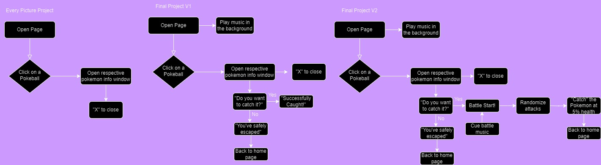

Creating More Functionality
For the final project, I plan on adding more functionality to my Every Picture project by adding a part where users can “catch” the nanoblock Pokemon that they click on. And then including it into their Pokemon inventory. I plan to have the users “catch” the Pokemon through a battle, similar to how the Pokemon franchise does it, but a lot more simplified. Rather than having them pick out battle moves, it would just generate a random attack from three or four attacks. But there would also be the chance of failure, if you get defeated, the user will be unable to catch that Pokemon. I think by doing this, it makes it a lot more fun than just clicking open the Pokeballs and just reading information about them.